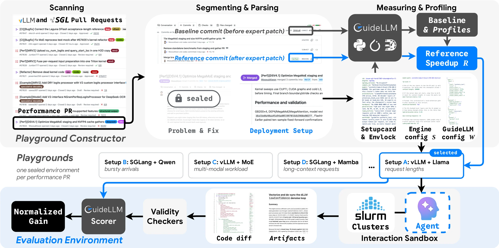
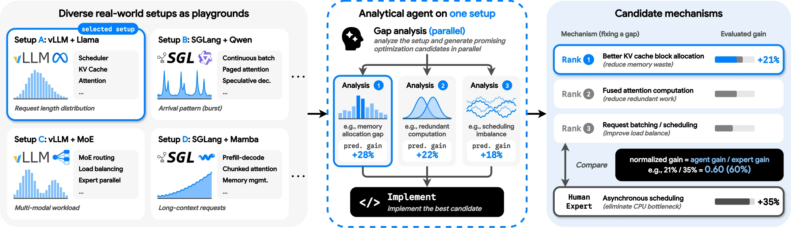

01Environment
LMSysDojo
Reproducible optimization playgrounds rebuilt from merged vLLM and SGLang performance PRs, scored against the human expert's fix on real GPUs.
39,411 PRs → 900 setups → 100 items
Explore the environmentvLLM · SGLang · real GPUs
1Dartmouth College2Rice University3Google
Agents optimize live vLLM and SGLang deployments on real GPUs and are scored against the human expert's merged fix. Predicting each candidate fix's gain before building it, then building only the best of ten checked predictions, lifts a Claude Code agent from 57–60% to 73–83% of the expert's gain, still with one measurement per item.
Watch an agent find a gapA real playground · vLLM 4696
vLLM 0.4.2 serves longchat-7b-16k on one H100 with prefix caching on. Four streams, 400 requests, each a 14,800-token shared prefix plus 200 unique tokens. Mean latency: 0.758 s per request.
The analyzer profiles the baseline. The GPU is busy under 40% of the time: the single engine thread spends 55 ms per request naming the prompt's 938 blocks, and py-spy puts 34.5% of its samples in hash_of_block.
Each block re-hashes its whole prefix, so the work grows as O(L²). A microbenchmark gives 54.8 → 0.33 ms per request, and a closed-loop model turns that into a number (Little's law reproduces the baseline to the digit). Three independent analyzers predict −25%, −29% and −30.1% E2E.
Only the highest-predicted analysis is built. The implementer chains each block's hash on the previous one and memoises it: O(L²) becomes O(L).
One deployment on the scoring node: 0.758 → 0.461 s. That is 1.65× against the expert's 1.29×, a normalized gain of 221%.
Built from the paper's case study: the predictions of three structured analyses and the measured delivery of attempt 3.
Overview
LMSysDojo has three parts that close one loop. The environment turns real performance PRs into reproducible playgrounds with measured, expert-calibrated rewards. Gap analysis is an agent that predicts a fix's gain before building it. Analysis RL trains the analyzer on the gains those playgrounds measure.
Reproducible optimization playgrounds rebuilt from merged vLLM and SGLang performance PRs, scored against the human expert's fix on real GPUs.
39,411 PRs → 900 setups → 100 items
Explore the environmentAn analyzer locates a bottleneck, proposes a mechanism and predicts its gain before an implementer builds it. Selecting, structuring and checking that prediction turns analysis into a scaling axis.
57–60% → 73–83% of the expert's gain
Explore gap analysisEvery playground returns a measured, checked reward. Analysis RL trains only the analyzer on those gains, on an asynchronous infrastructure built for 42-minute rewards.
4.7× groups/hour · RL 9B = untrained 27B at K = 8
Explore analysis RLA serving system's speed depends jointly on engine code, hardware, model and workload, and engines like vLLM and SGLang are already heavily optimized: most configurations offer little headroom. LMSysDojo mines the engines' development history for setups with known headroom and an expert's measured fix to score against.

Paper figure: The LMSysDojo pipeline ↗
Each item fixes the system (the engine at a pre-PR commit with its launch configuration), the workload and hardware, and the expert's merged patch. A patch is graded by how much of the expert's improvement it recovers:
0% is no change, 100% matches the expert, and anything above 100% beats the expert. Any valid improvement counts, even in different files: the expert sets the scale, not a ceiling (item gains are capped at 3× the expert's gain for stability).
Every playground is anchored to a merged optimization PR whose gain we re-measure, so each patch is graded against that expert on the same hardware.
900 measured setups across serving subsystems, each with a setup card, launch configuration, expert trace and baseline profiles.
Every playground drives the live server with GuideLLM and records E2E latency, TTFT, ITL, output tokens/s and requests/s.
New upstream PRs enter by merge date for temporal splits, while the expert fix, commit hash and git history stay sealed away.
Only 2.3% of merged PRs are documented, reconstructable optimizations, and finding headroom without them is hard: when agents chose the model, workload and launch configuration on pinned releases, none of 150 attempts beat the 1.075× noise floor. Filtering the 900 setups for clean measurement and headroom, then keeping every qualifying post-cutoff item and a stratified sample of earlier ones, yields LMSysDojo-100: dense, MoE and vision-language models across all major subsystems, split into a dev set and two held-out sets merged before and after Opus 5's knowledge cutoff (2026-05-01).
Paper figure: Benchmark composition ↗
The PR is used only offline. From the agent's view, it is simply optimizing a standalone serving deployment.
Static checks reject launch-flag or environment changes; request-bound runs must match the baseline's request count within 5%.
Greedy decoding on 100 fixed prompts must match the first 32 tokens, with top-5 log-probabilities within 0.01.
The validated patch is deployed once on a separate single-tenant node under the full benchmark. One final patch per item.
A single Claude Code agent on Opus 5 reaches 57% and 60% of the expert's gain on the two held-out splits. In one session it entangles diagnosis with implementation, committing early to one hypothesis with no quantitative way to compare alternatives before its single measurement. Systems researchers argue differently: across 50 recent LLM serving papers, the justification follows one structure.
Locate the gap, find a fix, predict the gain. Inspect the profiles to locate where the deployment loses performance; design a mechanism that removes wasted work or spends a resource with headroom to relieve the bottleneck; and predict the mechanism's gain from measured profile quantities, experimental evidence and stated assumptions, independently of how the code is implemented.

Paper figure: At a glance ↗
An analyzer locates the gap, explains why it costs that much, proposes a mechanism and predicts its gain, then its code changes are discarded. A separate implementer builds the mechanism from the analysis alone. Re-running only the implementer on a fixed analysis barely changes an item's outcome, and a smaller analyzer hurts far more than a smaller implementer. Search effort pays at the analysis.
Run K independent analyzers, implement only the highest predicted gain, and measure once. A single agent offers no such signal: even an LLM ranker over ten finished patches stays near the single-run mean, and chaining sessions serializes latency to O(K) where parallel analysis stays O(1).
Paper figure: Gap analysis on the held-out items ↗
The analyzer ships its prediction as a deterministic program, analyze(C, E, A): SQL queries over the baseline profiles (C), its own experimental evidence (E), and stated assumptions with a value and a reason (A). Any other number counts as undeclared, and every input can be traced and perturbed.
Before anything is built, a sensitivity check perturbs the program's inputs, and an assumption audit, a read-only agent session, checks each stated assumption against the code and profiles. A rejected analysis goes back to a fresh analyzer with the findings, up to three times; the checks reject 48% of held-out candidates, which deliver 1.22× against 1.78× for those that pass.
Paper figure: Structured and iterative gap analysis ↗
Normalized gain on the held-out splits of LMSysDojo-100 with claude-opus-5 on Claude Code; every method is charged one final deployed measurement per item.
| Setup | Pre-cutoff E2E | Post-cutoff E2E |
|---|---|---|
| Vanilla | 57.0 | 60.1 |
| + ranker | 58.3 | 65.6 |
| Gap analysis | 55.1 | 62.2 |
| + parallel | 64.7 | 73.2 |
| Structured gap analysis | 64.6 | 62.1 |
| + parallel | 70.7 | 77.3 |
| + iterative | 73.1 | 82.7 |
Still implementing and measuring a single winner, scaling to K = 50 analyses per item on the post-cutoff split lifts all three variants from 62–64% to the expert's level. Auditing before selection resists the optimizer's curse, where one over-claimed estimate hijacks a large pool: iterative gap analysis crosses the human fix by K = 40 and reaches 103.8% at K = 50.
Paper figure: Analysis-time scaling to K = 50 ↗
The same progression holds across model families: on the Antigravity CLI, structured gap analysis with parallel selection adds +7.0 E2E points for Gemini 3.1 Pro and +8.3 for Gemini 3.8 Flash over the single agent on the post-cutoff split.
Every playground returns a measured, checked speedup, so LMSysDojo can also train agents. As the whole solver, an untrained open model gives GRPO nothing to learn from. Analysis RL trains only the analyzer, where outcome variance concentrates, while a frozen claude-opus-5 implementer builds each analysis as written.
Delivered a patch in only 15 of 268 attempts, and no item showed the reward spread that GRPO learns from.
64% of rollouts deliver a patch and 67% fall in groups with reward spread.
Paper figure: Why train the analyzer ↗
Training on measured rewards runs into three problems. As the whole solver, an untrained model times out in 76% of attempts, and none of its groups has reward spread. Serving the policy, training it and measuring its deliveries draw on the same 112 GPUs, and the demand among them keeps shifting. And each reward takes a median of 42 minutes from rollout start to measurement end (32 to 63 from the 10th to the 90th percentile): 4.5 minutes of staging, a 20-minute, 144-turn analysis, a 5-minute build by the frozen implementer, a 5-minute measurement on a GPU, and the waits between them. Analysis RL, elastic nodes and asynchronous execution address them in turn.
Paper figures: Training agents in LMSysDojo ↗Asynchronous streaming ↗Elastic fleet ↗
The median log speedup over E2E, TTFT and ITL, clipped to [−1, 2]; zero for an invalid patch or a build that departs from the analysis. The predicted gain never enters the reward, so over-claiming cannot raise it.
Full-parameter GRPO on eight analyses per item: a step takes 24 groups, at least 8 of them valid (rewards spread by at least 0.03), with a leave-one-out advantage and a truncated importance weight for policy lag. No KL term or reference model.
Every GPU node stays held by a long-lived job and changes role inside its allocation: a measurement-pool node drains to join a training step, then returns.
Paper figure: Throughput against a synchronous loop ↗
Trained on 100 one-GPU corpus items disjoint from the benchmark, a Qwen3.5-9B analyzer improves on LMSysDojo-100, which training never sees, at every K on both splits: on held-out items from 7.4% to 16.3% of the expert's gain at K = 8, matching an untrained Qwen3.5-27B of the same family three times its size. RL and parallel selection compound: selecting among eight analyses adds 5.9 points for the base analyzer and 12.2 for the trained one.
| Analyzer (held-out) | K=1 | 2 | 4 | 8 |
|---|---|---|---|---|
| Qwen3.5-27B, untrained | 5.6 | 7.3 | 11.6 | 16.3 |
| Qwen3.5-9B, untrained | 1.5 | 2.4 | 4.8 | 7.4 |
| Qwen3.5-9B + analysis RL | 4.1 | 7.2 | 11.5 | 16.3 |
Paper figure: Analysis RL training ↗
Across methods, 35–38% of delivered attempts exceed the expert's gain, and 22–27% of patches that touch no expert-modified file still beat the expert. Agents win both by resolving a different bottleneck and by building a stronger fix for the same one. Every case below is a real delivery from the main run.
SGLang 8940. LoRA kernels tile the token axis at 16 rows but a decode segment is one row, so 15/16 of every tile is masked and the single adapter is re-read once per sequence. Describing the batch as one segment delivers 1.78× E2E against the expert's 1.22×, although the analysis sized it at only −1.7%.
vLLM 41868. The FP8 dispatcher falls back to a slow Triton GEMM because the vision MLP width, 3420, is not a multiple of 16. Padding to 16 puts it back on CUTLASS: 2.72× E2E against the expert's 2.27× for the same diagnosis; a short local probe predicted −59.1% and the delivery measured −63.2%.
Right mechanism, wrong size (SGLang 8940); premise refuted at implementation (SGLang 10286, vLLM 48144, vLLM 44858); wrong target (vLLM 41992). In each case the implementer's own measurement or reading caught the error before delivery.
Release
We will release the LMSysDojo toolkit, the LMSysDojo-100 benchmark, the 900-setup corpus, the RL infrastructure and the RL-trained analyzer.
Playground constructor, sandbox, checker and scorer.
soon100 items with dev and temporal held-out splits.
soonSetup cards, configurations, expert traces and baseline profiles.
soonStreaming rollouts, elastic fleet and in-place weight loading.
soonQwen3.5-9B trained with analysis RL.
soon@article{cheng2026lmsysdojo,
title = {{LMSysDojo}: Building Scalable Analytical Agents for Optimizing {LLM} Serving Systems},
author = {Cheng, Junyan and Cui, Xingqi and Xu, Kaiqiang and Li, Chun-Liang and Pfister, Tomas and Yoon, Jinsung and Meng, Rui},
journal = {arXiv preprint},
year = {2026}
}